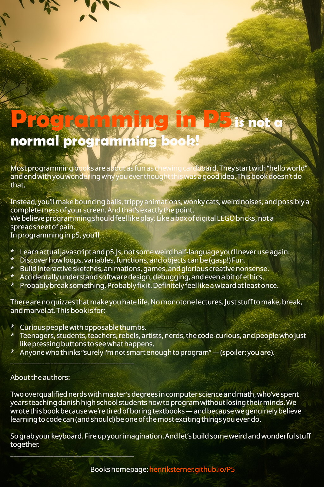

I am a computer scientist, machine-learning practitioner, quantitative-finance developer, author and educator working where software, mathematics and psychology meet.
I also build agent-orchestrated development workflows—because complex software benefits from a team, even when some of the team members are language models.
Selected work
Featured projects
Where theory meets the “run” button.
Teaching resources, books and experiments designed to make difficult ideas tangible. The computer still does exactly what it is told, which remains less reassuring than it sounds.
01
Machine learning · Python
Intelligent Systems
A practical course in machine learning, deep learning and data science. Students move between models, mathematics and real datasets—where row 47,382 inevitably contains something surprising.
A visual route into programming: from variables and animation to object-oriented design, architecture and testing. Because a bouncing circle can teach more than its CV might suggest.
A structured course for learners who are ready to move from visual programming into Python, notebooks and the slightly alarming authority of whitespace.
Exercises from first steps to NumPy, Matplotlib, Streamlit and classic machine-learning projects. Fundamentals first; the fancy things have nowhere sensible to stand otherwise.
A Streamlit application for analysing stock portfolios with current market data, fund look-through and measures such as returns, volatility, drawdown, beta, correlation and diversification. Its screening model suggests possible portfolio additions—analysis, not investment advice.
Selected private workPortfolio analytics
16Local AI
VygotskAI
A pedagogical AI scaffold for Python education, combining a locally fine-tuned Danish language model with differentiated feedback, learner profiles and simulated student–teacher dialogues. It helps learners take the next step without quietly completing the entire staircase for them.
Selected private workAI & learning
17Browser tools
ThinkInUML
A zero-installation browser toolkit for class, flow, use-case and sequence diagrams, with JSON and PlantUML export, Python-code generation, Blockly programming and step-by-step code visualisation.
Browser-based companions to Python i Gymnasiet, developed with Kathrine Bohus Madsen. Each laboratory turns an abstract idea into something students can manipulate, observe and explain—without installation, accounts or a ceremonial dependency crisis.
38interactive tools
0required installations
1variable changed at a time
The laboratories connect visual models with algorithms, data structures, diagrams and executable ideas. Students predict, experiment, inspect the result and then explain what the machine did—which is usually more educational than blaming the machine immediately.
01
Python foundations
Move between blocks, code and visible program state while practising the fundamentals.
Turtle & Blockly
Code visualisation
Debugging
Regex
Databases & web scraping
02
Software design
Model systems before implementing them, and follow responsibilities through architectural layers.
Class & flow diagrams
Use cases & sequences
MVC
Three-layer architecture
PlantUML & Mermaid
03
Algorithms & mathematics
Step through algorithms and compare their behaviour, cost and mathematical assumptions.
Sorting, graphs & trees
Dijkstra & A*
Cryptography & compression
Monte Carlo & fractals
Quaternions
04
AI, games & simulation
Train models, program strategies and watch simple rules create surprisingly complicated worlds.
KNN, K-means & random forests
Neural networks
Agents & evolutionary algorithms
Robotics & Game of Life
Snake, Pong & game AI
ThinkInUML · Python Laboratories
Open the laboratory doors.
Explore all tools, chapter suggestions and the accompanying teacher guide.
“The interesting problems rarely stay inside one discipline. Fortunately, neither do I.”
I am a computer scientist and mathematician with a minor in psychology from the University of Copenhagen. I work across machine learning, quantitative finance, software development, writing and education.
As a machine-learning practitioner and quantitative-finance developer, I am interested in predictive models, financial time series, market structure and the software systems that turn mathematical ideas into testable tools. A model is, after all, an opinion with matrices—and should be questioned accordingly.
I also work with agent orchestration for software development: structuring specialised AI agents, tools and workflows so they can analyse, implement and verify complex systems collaboratively. Alongside this, I teach programming, informatics, mathematics, machine learning and data science, and write books that make the underlying ideas approachable without pretending they are trivial.
Earlier, I worked as a teaching assistant in algorithms, data structures and advanced algorithms at the University of Copenhagen. I now also supervise teachers completing their pedagogy examinations in computer science.
Machine learning
Quantitative finance
Agent orchestration
Python
JavaScript / TypeScript
Java
C#
C / C++
Jupyter
01
Machine-learning systems
Applied modelling, data mining and intelligent systems, with mathematics close enough to inspect and code close enough to test.
02
Quantitative finance
Financial time series, price and sales prediction, market analysis and the software used to turn hypotheses into evidence.
03
Agentic software development
Orchestrating specialised AI agents, tools and verification loops to develop software as a coordinated system rather than a very confident autocomplete.
04
Mathematics, psychology & learning
Using mathematical structure and psychological insight to understand problems, people and how computer science is learned.
Research foundations
Algorithms, geometry and computational thinking
My academic path includes algorithms and complexity, computational geometry and topology, research on alpha shapes and proteins, contribution to the 2017 Danish upper-secondary programming curriculum, and published teaching material on object-oriented programming through emergent flocking behaviour.
Two books about learning to program: one published, one currently being written, tested and occasionally stared at until the examples cooperate.

Published
Programming in P5
By Peter Sterner & Henrik Sterner
A practical introduction to programming through visual and interactive experiences. The book moves from first principles to objects, software architecture and testing without asking the reader to postpone all fun until chapter fourteen.
A forthcoming book for Python in upper-secondary education, connecting programming with problem solving and classroom practice. It currently lives in a private repository, where indentation is both a programming concept and a character-building exercise.
● Selected private work · Repository not public
{ }
Contact
Have an idea worth experimenting with?
For machine learning, quantitative finance, agent-based software development, teaching or books, get in touch. Interesting problems are welcome; suspiciously perfect datasets will be questioned politely.